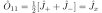
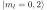
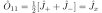
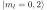
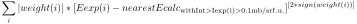
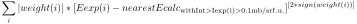

Next: Solution of the exercises Up: USERS MANUAL Workshops available Previous: Dipole Approximation Contents Index
This is an extension of the theory published by Klaus W. Becker, Peter Fulde and
Joachim Keller in Z. Physik B 28,9-18, 1977 [5]
"Line width of crystal-field excitations in metallic rare-earth systems"
and an introduction to the computer program for the calculation of the neutron
scattering cross section. The computer program bfk is written by J. Keller,
University of Regensburg.
Here we present a brief outline of the theoretical concepts to calculate the dynamical susceptibility of the Re ions and the scattering cross section.
The neutron-scattering cross section is related to the dynamic susceptibility of the RE ions
![$\displaystyle \chi_{\alpha\beta}(t)={i\over \hbar} \Theta(t)\langle [J^\dagger_\alpha(t), J_\beta(0)]\rangle
$](img2037.svg)


 is the scattering wave vector,
is the scattering wave vector,
 .
.
 cm is the basic scattering length,
cm is the basic scattering length,  is the Landé factor,
is the Landé factor,
 the atomic form factor of the
rare earth ion.
the atomic form factor of the
rare earth ion.
Formal evaluation of the dynamic and static susceptiblity.
The dynamic spin-susceptibilities are correlation functions of the form
![$\displaystyle \chi_{i,k}(t)=i \Theta(t) \langle [A_i^\dagger(t),A_k(0)]\rangle
$](img2044.svg)
 is a Heisenberg operator
is a Heisenberg operator

![${\cal L}A = [H,A]$](img2047.svg) the Heisenberg operator can also be
written formally as
the Heisenberg operator can also be
written formally as

 of
two variables
of
two variables  can be written as
can be written as
![$\displaystyle \chi_{i,k}(z)=i\int_0^\infty dt e^{izt} \langle [A_i^\dagger(t),A_k(0)]\rangle
$](img2051.svg)

![$\displaystyle \chi_{i,k}(z)= -\langle [A_i^\dagger,{1\over {z-\cal
L}}A_k(0)]\rangle
$](img2053.svg)
The static isothermal susceptibilities can also formally be calculated with help of the Liouvillian.

The static susceptibilities are used to define a scalar product between the dynamical variables:

![$\displaystyle ({\cal L}A_i\vert A_k)=(A_i\vert {\cal L}A_k)={1\over \beta}\langle
[A_i^\dagger,A_k]\rangle
$](img2056.svg)


The model:
We calculate the spin susceptibility of a RE ion in the presence of exchange interaction with conduction electrons. The system is described by the Hamiltonian


 .
The second part is the Hamiltonian of the conduction electrons
.
The second part is the Hamiltonian of the conduction electrons


 and the eigenstates
expressed by angular momentum eigenstates are known.
and the eigenstates
expressed by angular momentum eigenstates are known.
Definition of dynamical variables
In our case we use as dynamical variable the standard-basis operators

![$\mu= [nm]$](img2067.svg) between CEF levels
between CEF levels  and
and  .
In the absence of the interaction with conduction electrons
.
In the absence of the interaction with conduction electrons


The idea of the projection formalism to calculate the dynamical
susceptibility of a variable  is to project this variable onto a closed
set of dynamical variables
is to project this variable onto a closed
set of dynamical variables  and to solve approximately the coupled
equations between these variables. For this purpose a projector is defined
by
and to solve approximately the coupled
equations between these variables. For this purpose a projector is defined
by

![$P^{-1}_{\nu \mu}=[P^{-1}]_{\nu \mu}$](img2073.svg) is the
is the  -component of the inverse matrix of
-component of the inverse matrix of
 .
.
For the resolvent operator of the relaxation function


 . In components
. In components

![$\displaystyle \sum_\lambda \Bigl(z\delta_{\nu\lambda}-\sum_\kappa\bigl[L_{\nu\k...
...u\kappa}(z)\bigr]P^{-1}_{\kappa\lambda}\Bigr)\Phi_{\lambda\mu}(z)
=P_{\nu \mu}
$](img2081.svg)


Now we apply the formalism to the coupled spin-electron system and restrict ourselves to the lowest order contributions of the spin electron interaction. As dynamical variables we choose a decomposition of the original spin-variable:

 performed with the
standard-basis operator
performed with the
standard-basis operator
 .
.
In lowest (zeroth) order in the el-cf interaction


 is the thermal occupation number. For the
frequency term we then get
is the thermal occupation number. For the
frequency term we then get

![$\displaystyle \Phi_{\nu\mu}(z)=\bigl[\Omega^{-1}\bigr]_{\nu\mu}(z)
P_\mu, \quad...
...nu)\delta_{\nu\mu} -
M_{\nu\mu}(z)[P^{-1}]_\mu, \quad
E_\nu = E_{n_2}- E_{n_1}
$](img2091.svg)
In lowest order in the electron-spin interaction
 can be replaced by
can be replaced by
 .
Then we get for the memory function
.
Then we get for the memory function


Now


 |
 |
|||
![$\textstyle -J^i_{m_1n_1}J^i_{n_2m_2}G_{n_2m_1}
-J^i_{n_2m_2}J^i_{m_1n_1}G_{m_2n_1}\Bigr]$](img2102.svg) |
In order to calculate the relaxation functions  we use the general relation between relaxation function and dynamic
susceptibility
we use the general relation between relaxation function and dynamic
susceptibility

 ):
):
 |
![$\textstyle = {2\over \beta \omega}\sum_{k,k+Q} \langle \Bigl[K_{mn}
c^\dagger_{...
...+
E_m -\epsilon_k+\epsilon_{k+Q})^{-1} K_{nm}
c^\dagger_{k}c_{k+Q}\Bigr]\rangle$](img2107.svg) |
|||
 |

 and
and
 we obtain
we obtain

 |
 |
|||
 |
 |
 |
 |
|||
|
 |
![$\displaystyle Im G_{nm}=-{2\pi N^2(0)\over \beta \omega}(\omega -\omega_{nm}) {1-\exp(-\beta
\omega)\over
1-\exp[(\omega_{nm}-\omega)\beta]}p_m
$](img2120.svg)
![$\displaystyle F_{nm}(\omega )= {1\over \beta \omega}(\omega -\omega_{nm}) {1-\exp(-\beta
\omega)\over
1-\exp[(\omega_{nm}-\omega)\beta]}p_m
$](img2121.svg)


 |
 |
|||
![$\textstyle -J^i_{m_1n_1}J^i_{n_2m_2}F_{n_2m_1}
-J^i_{n_2m_2}J^i_{m_1n_1}F_{m_2n_1}\Bigr]$](img2126.svg) |

Summary:
For the neutron scattering cross section we need the function
 , where
, where
 is the frequency dependent part of the dynamic
susceptibility
for spin components
is the frequency dependent part of the dynamic
susceptibility
for spin components  ,
, , which is
related to the corresponding relaxation function
, which is
related to the corresponding relaxation function
 by
by

 which in lowest order in the exchange interaction is given by
which in lowest order in the exchange interaction is given by


 to
to  between crystal field
levels of the magnetic ion. The partial relaxation functions are obtained by
solving the matrix
equation
between crystal field
levels of the magnetic ion. The partial relaxation functions are obtained by
solving the matrix
equation
![$\displaystyle \Phi_{\nu\mu}(z)= [\Omega^{-1}]_{\nu\mu}P_\mu
$](img2139.svg)

 is the energy difference of cf-levels.
is the energy difference of cf-levels.
Only terms in lowest order in the el-ion interaction are kept. We neglect frequency shifts due to the electron-ion interaction. Then the memory function is purely imaginary (with a negative sign).
Note that compared to our paper BFK, Z.Physik B28, 9-18, 1977 we have used here a different sign-convention.
For numerical reasons it is more convenient to calculate the relaxation function in the following way:
![$\displaystyle \Phi_{\nu\mu}(z)= P_\nu[\bar\Omega^{-1}]_{\nu\mu}P_\mu
$](img2142.svg)

From the relaxation function we get for the dynamic scattering cross section
 and the energy loss
and the energy loss
 Note that in our formulas  contains a factor  and is the
energy loss. If we want to have meV as energy unit and Kelvin as temperature
unit, we have to write
Note that in our formulas  contains a factor  and is the
energy loss. If we want to have meV as energy unit and Kelvin as temperature
unit, we have to write  .
.
For the analysis of polarised neutron scattering the different
spin-components
 of  are needed.
These are defined by
of  are needed.
These are defined by


 are diagonal in our
approximation.
are diagonal in our
approximation.